CS184/284A Spring 2025 Homework 3 Write-Up
Link to webpage: cs184.eecs.berkeley.edu/sp25
Link to GitHub repository: https://github.com/cal-cs184-student/hw3-pathtracer-dennis_hw3
Overview
In this assignment, I built a physically based path tracer from the ground up. Starting from camera ray generation and primitive intersection, I added BVH acceleration to make complex scenes tractable, then implemented direct lighting via both hemisphere and importance sampling, and finally extended it to full global illumination with recursive indirect bounces and Russian Roulette termination. Adaptive sampling was added on top to avoid wasting samples on pixels that had already converged. The most interesting takeaway was seeing how each piece compounds on the last. Importance sampling alone makes a dramatic difference, but it is the indirect bounces that make scenes feel truly real, with color bleeding and soft ambient light that you simply cannot fake with direct lighting alone.
.Part 1: Ray Generation and Scene Intersection
Pixel Sampling
The pipeline begins in raytrace_pixel, which generates
ns_aa
sample rays per pixel. For each sample, a random 2D offset is drawn from
gridSampler and added to the integer pixel coordinate. The
result is divided by the image width and height to produce normalized
coordinates (x, y) ∈ [0, 1]², which are passed
to camera->generate_ray(). The radiance returned by
est_radiance_global_illumination is accumulated and
averaged to form the final pixel value.
Camera Ray Generation
In Camera::generate_ray, normalized image coordinates are
first mapped to camera-space sensor coordinates. The sensor lies on the
z = −1 plane; its horizontal extent is
±tan(hFov / 2) and its vertical extent is
±tan(vFov / 2). A coordinate
(x, y) is remapped from
[0, 1] to
[−1, 1] and scaled accordingly:
sensorX = (2x − 1) · tan(hFov / 2)
sensorY = (2y − 1) · tan(vFov / 2)
This gives a direction vector (sensorX, sensorY, −1) in
camera space. That vector is multiplied by the camera-to-world rotation
matrix c2w
and normalized to produce the world-space ray direction. The ray
originates at
pos (the camera's world-space position), with
min_t and max_t initialized to
nClip and fClip respectively.
Scene Intersection
Once a ray enters the scene, the BVH is traversed to find intersections
with triangles and spheres. For any candidate intersection, the computed
t-value must lie within
[min_t, max_t]; if valid, max_t is updated so
that subsequent tests can quickly reject farther-away hits. On a
confirmed intersection, the Intersection struct is
populated with the t-value, interpolated
surface normal, a pointer to the hit primitive, and the surface BSDF —
all used downstream for shading.
Triangle Intersection: Möller–Trumbore Algorithm
Triangle intersection uses the Möller–Trumbore algorithm, which solves for the ray parameter t and barycentric coordinates simultaneously without first computing the triangle's plane equation.
Given ray origin o, direction d, and triangle vertices p1, p2, p3:
-
Compute edge vectors
e1 = p2 − p1,e2 = p3 − p1, and the vector from the ray origin top1:s = o − p1. -
Compute helper cross-product vectors:
s1 = d × e2ands2 = s × e1. -
The denominator is
dot(s1, e1). If it is zero, the ray is parallel to the triangle's plane and there is no intersection. -
Solve for t and the two barycentric
coordinates:
t = dot(s2, e2) / denomb1 = dot(s1, s) / denomb2 = dot(s2, d) / denom -
The intersection is valid only when
b1 ≥ 0,b2 ≥ 0,b1 + b2 ≤ 1(the point lies inside the triangle), and t ∈ [min\_t, max\_t]. -
On a valid hit, the third barycentric coordinate is
b0 = 1 − b1 − b2, and the interpolated surface normal isb0·n1 + b1·n2 + b2·n3, producing smooth shading across the triangle.

|
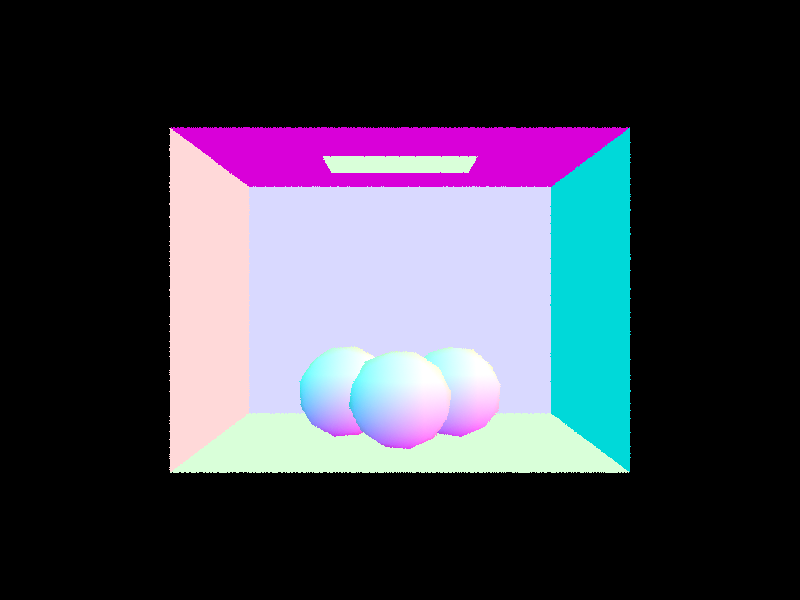 |
Part 2: Bounding Volume Hierarchy
Construction begins by computing a bounding box that encloses all
primitives in the current range [start, end). A new
BVHNode is created with that bounding box. If the number of
primitives is at or below max_leaf_size, the node is made a
leaf by storing the iterator range and returning immediately.
Otherwise, the node is split into two children via the following steps:
-
Choose the split axis. The extent of the bounding box
(
bbox.extent) is examined along all three axes. The axis with the largest extent is selected. This keeps child bounding boxes as compact as possible, minimizing wasted empty space and reducing the chance of ray misses against unnecessarily large boxes. - Compute the split value. The average centroid of all primitives along the chosen axis is used as the split point — the centroid of each primitive's bounding box is summed, then divided by the primitive count. This centroid mean split heuristic tends to produce balanced subtrees while adapting to the actual spatial distribution of primitives, unlike a simple midpoint of the bounding box extents.
-
Partition primitives.
std::partitionreorders the primitives in-place so that those whose centroid falls below the split value come first. The returned iterator becomes the dividing pointmid. -
Handle degenerate splits. If all primitives land on
one side (
mid == startormid == end), the range is split at the median index (start + count / 2) to guarantee both children are non-empty and prevent infinite recursion. -
Recurse.
construct_bvhis called on[start, mid)and[mid, end)to build the left and right subtrees.
|
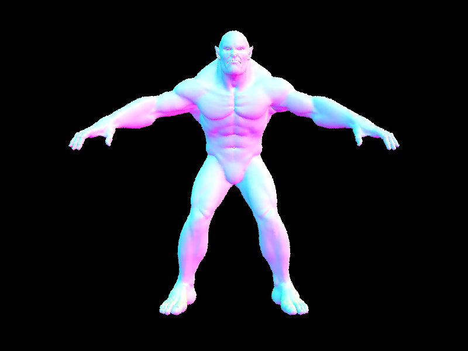 |
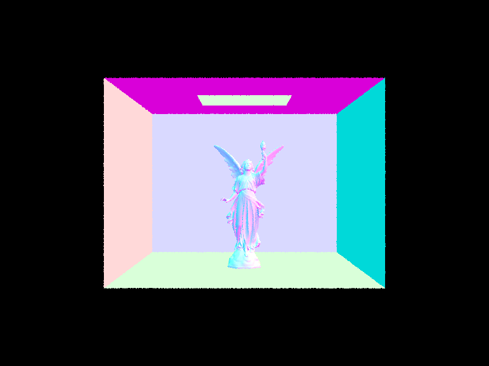 |
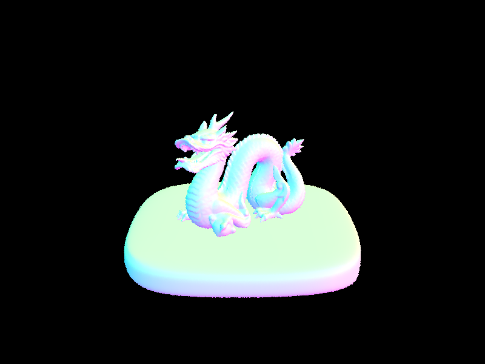 |
Rendering Time: With vs. Without BVH Acceleration
Without BVH acceleration, the renderer tests every ray against every
primitive, giving O(n) intersection cost per ray. This becomes
painfully apparent on all three scenes tested here: rendering
beast.dae without BVH took over 1000 seconds, while the
BVH-accelerated version completed in under 2 seconds. On
CBlucy.dae the gap widens further, and
dragon.dae is effectively intractable without acceleration.
The BVH reduces average intersection cost to O(log n) by
hierarchically culling entire subtrees whenever a ray misses a bounding
box, meaning only a small handful of primitives are ever tested per ray
regardless of scene complexity. This logarithmic scaling explains why
BVH acceleration delivers order-of-magnitude speedups that grow larger
as scene complexity increases.
Part 3: Direct Illumination
Uniform Hemisphere Sampling
In estimate_direct_lighting_hemisphere, direct lighting is
estimated by sampling directions uniformly over the hemisphere centered
at the surface normal of the hit point. A local coordinate frame is
constructed at the intersection so that the surface normal aligns with
the z-axis. The implementation draws
num_samples directions (equal to
scene->lights.size() * ns_area_light to keep sample counts
comparable with importance sampling) from a uniform hemisphere
distribution. Each sampled direction is transformed into world space and
used to spawn a shadow ray from the hit point. If that ray intersects a
surface whose BSDF has nonzero emission, the rendering equation
contribution is accumulated:
L += emission · f(w_out, w_in) · cos(θ)
where cos(θ) is the dot product of the sampled direction
with the surface normal (i.e. w_in.z in local space).
Because the PDF of uniform hemisphere sampling is a constant
1 / (2π), the Monte Carlo estimator divides by this PDF by
multiplying the accumulated sum by 2π / num_samples at the
end.
Light Importance Sampling
In estimate_direct_lighting_importance, the estimator
samples directly from each light source rather than uniformly over the
hemisphere. For every light in the scene,
ns_area_light samples are drawn (or just one sample for
delta lights such as point lights, since they have no area to integrate
over). Each sample calls light->sample_L, which returns the
radiance arriving at the hit point from that light direction, along with
the world-space direction to the light wi_world, the
distance to the light, and the PDF of the sample.
The sampled direction is transformed into local space. If it falls below
the surface (wi_local.z < 0), the sample is discarded.
Otherwise, a shadow ray is cast from the hit point toward the light,
with max_t set to just short of the light distance so that
the light itself is not treated as an occluder. If no intersection is
found — meaning the light is visible — the contribution is accumulated:
L += radiance · f(w_out, w_in) · cos(θ) / pdf
Each light's contributions are averaged over its samples before being added to the final outgoing radiance. Because samples are drawn from a distribution that concentrates probability where light actually arrives, importance sampling converges far faster than hemisphere sampling for the same number of rays.
|
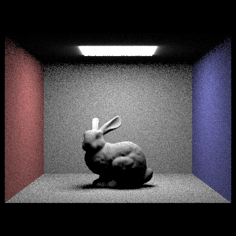 |
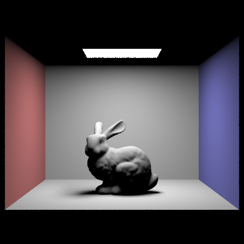 |
|
|
|
|
|
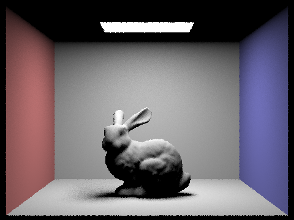 |
The difference between the two methods is pretty immediately obvious just by looking at the renders side by side. Hemisphere sampling fires rays in random directions across the whole upper hemisphere, which sounds reasonable until you realize that the vast majority of those rays completely miss the light and contribute nothing, they're essentially wasted. The result is a noisy, grainy image that needs a huge number of samples before it starts looking clean, particularly in shadowed areas and anywhere the light doesn't directly dominate. Importance sampling sidesteps this problem entirely by only sampling directions that actually point toward a light source, so nearly every sample does useful work. In practice this means you get dramatically smoother soft shadows and much less speckle for the same render time. The one thing hemisphere sampling technically captures that importance sampling doesn't is a faint glow right around the edge of area lights, since it can pick up emission from rays that graze the light geometry, but that's a minor quirk rather than a meaningful advantage. For any scene where render quality matters, importance sampling is the clear winner.
Part 4: Global Illumination
Indirect lighting is handled in
at_least_one_bounce_radiance, which is called recursively
to accumulate light that has bounced two or more times before reaching
the camera. The function builds on top of the direct lighting already
computed in one_bounce_radiance and extends it by tracing
additional bounce rays into the scene.
One Bounce Base
At the start of each call, if accumulation mode is enabled
(isAccumBounces) or the ray is on its last allowed bounce
(r.depth == 1), the direct lighting contribution from
one_bounce_radiance is added to the output. This ensures
that every surface point always accounts for light arriving directly
from a source, regardless of how deep the recursion is.
Recursion Termination
If the ray's depth has reached 1, the function returns immediately
without spawning any further bounce rays. This is the hard cutoff — no
matter what, the path cannot exceed max_ray_depth total
bounces, since each recursive call decrements r.depth by
one and the initial ray is launched with
depth = max_ray_depth.
Russian Roulette
For all bounces beyond the first indirect bounce, Russian Roulette is
used to randomly terminate paths with probability 1 - 0.7.
The first indirect bounce (when r.depth == max_ray_depth)
is always traced to guarantee at least one indirect contribution. For
subsequent bounces, coin_flip(0.7) decides whether to
continue; if the flip fails, the function returns early with whatever
has been accumulated so far. This keeps render times bounded without
introducing bias, since surviving paths are reweighted by
1 / 0.7 to compensate for the ones that were terminated
early.
Sampling the Next Bounce
If the path continues, the surface BSDF is sampled via
sample_f to draw an incoming direction wi in
local space along with its PDF. This direction is transformed into world
space and used to construct a new bounce ray originating at the hit
point with min_t = EPS_F to avoid self-intersection, and
depth = r.depth - 1 to track the remaining bounce budget.
Accumulating Indirect Radiance
If the bounce ray hits something,
at_least_one_bounce_radiance
is called recursively on that new intersection. The returned radiance is
weighted by the rendering equation terms and added to the output:
L_out += f · indirect · cos(θ) / pdf · weight
where cos(θ) is wi.z in local space, and
weight is 1.0 for the first forced indirect bounce or
1 / cpdf for all subsequent bounces to correct for Russian
Roulette termination. The final result is the sum of direct and all
accumulated indirect contributions along the path.
|
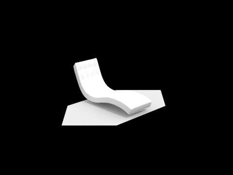 |
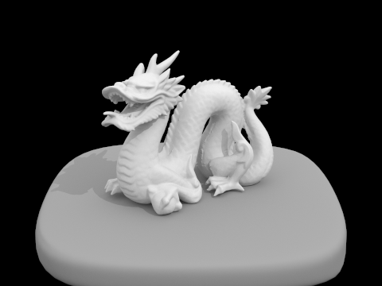 |
|
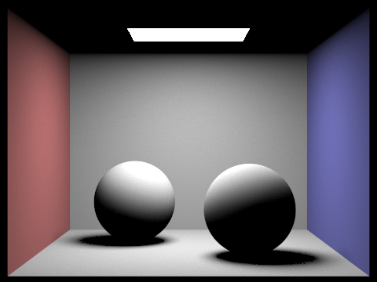 |
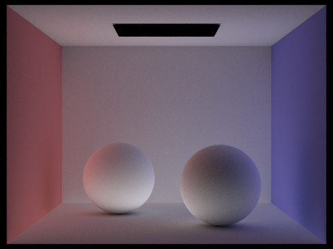 |
|
|
|
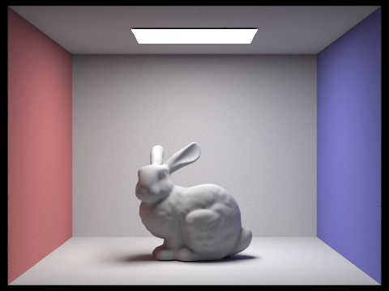 |
|
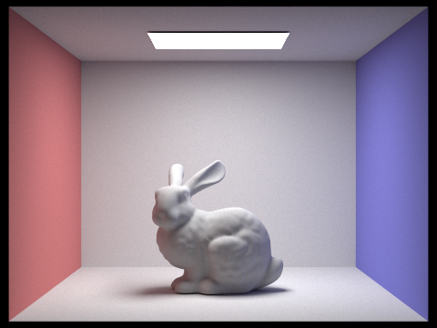 |
|
|
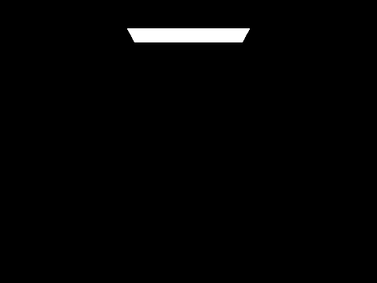 |
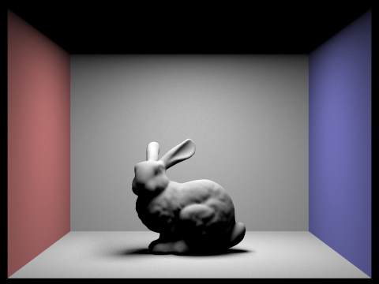 |
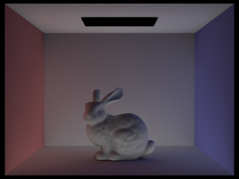 |
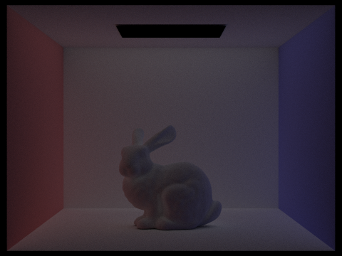 |
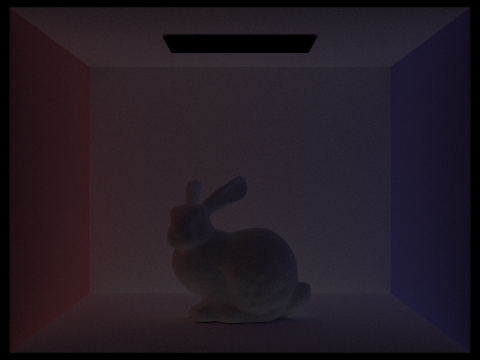 |
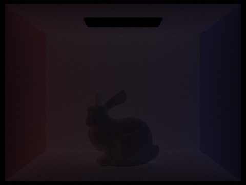 |
|
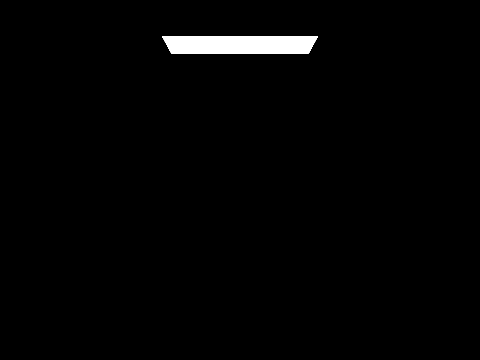 |
|
|
|
|
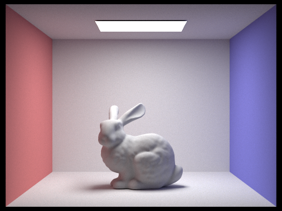 |
|
|
|
|
|
|
|
|
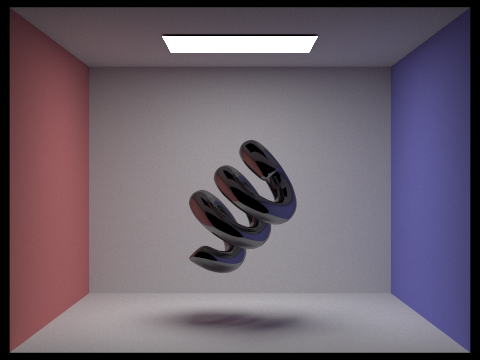 |
Direct vs. Indirect Illumination
With only direct illumination, the scene is lit entirely by light that travels straight from the source to a surface with no bouncing. The result looks correct in a basic sense but feels flat and artificial: areas not directly visible to the light are completely black, and there is no color bleeding between surfaces. With only indirect illumination the opposite is true: the light source itself is dark since zero bounce radiance is excluded, but the rest of the scene is softly and evenly lit by light that has already bounced at least once. The underside of the bunny and the corners of the room are noticeably brighter than they would ever be under direct lighting alone, and a faint pink and blue tint from the side walls bleeds onto the bunny and the floor. Together the two components produce a scene that looks perceptually complete.
Individual Bounces (isAccumBounces = false)
Looking at each bounce in isolation makes it clear how much each one contributes. The 0th bounce is just the light source itself against a black scene. The 1st bounce is conventional direct lighting: bright, high contrast, with hard shadow underneath the bunny. The 2nd bounce is where things get interesting: it is responsible for filling in the shadowed underside of the bunny and the dark corners of the room that the first bounce cannot reach. The image at this bounce is dim overall but visibly adds soft ambient fill that direct lighting simply cannot produce. The 3rd bounce is dimmer still but further softens remaining dark areas and introduces more of the color bleeding from the red and blue walls. Beyond the 3rd bounce the contributions become very small and the images appear nearly black, but they still marginally improve the accuracy of the final result. This is fundamentally different from rasterization, which has no natural mechanism for simulating these inter-reflection effects and must rely on baked ambient terms or screen space approximations to approximate what path tracing computes physically.
Accumulated vs. Unaccumulated Bounces
With accumulation enabled, each image adds all bounces up to and including the current max depth, so the scene gets progressively brighter and more complete as depth increases. At depth 0 only the light is visible. At depth 1 the scene looks like a standard direct lighting render. By depth 2 the shadowed regions start to fill in, and by depth 4 and 5 the image has largely converged to its final appearance with only marginal changes between them. Without accumulation, each image shows only the contribution of that exact bounce in isolation, which gets progressively dimmer as depth increases since each successive bounce carries less energy. The accumulated version is what you would actually render in practice; the unaccumulated views are useful for understanding where each bounce is contributing energy in the scene.
Russian Roulette
The Russian Roulette renders at depths 0 through 4 look essentially identical to the accumulated versions, which is exactly what you want: Russian Roulette is an unbiased termination strategy, so it should not change the expected value of the result. The depth 100 render is the most telling: without Russian Roulette a max depth of 100 would be computationally intractable, but with it the render completes in reasonable time and looks nearly identical to depth 5. This is because Russian Roulette naturally terminates most paths well before 100 bounces, only continuing paths that are statistically likely to contribute meaningfully, and reweighting them to keep the estimator unbiased.
Sample Rate Comparison
The CBcoil scene shows the effect of sample count clearly. At 1 sample per pixel the image is extremely noisy, with heavy grain covering the walls, floor, and the coil itself. At 2 and 4 samples the structure becomes more readable but speckle is still prominent across the entire scene. By 8 and 16 samples the coil and room geometry are clearly defined, with noise retreating mostly to the softer shadow regions beneath the coil and in the corners. At 64 samples the image looks quite clean and the soft shadows under the coil are smooth and well defined. At 1024 samples the render is essentially noise free, with clean color gradients on the walls and a fully resolved shadow beneath the coil. The relationship follows the expected pattern: halving the noise requires roughly four times as many samples, since variance decreases proportionally to sample count.
Part 5: Adaptive Sampling
Rather than spending the same number of samples on every pixel, adaptive
sampling stops early once a pixel has converged. Every
samplesPerBatch samples, the mean and variance of the
accumulated illuminance values are used to compute a 95% confidence interval
width I = 1.96 · sqrt(variance / n). If
I ≤ maxTolerance · mean, the pixel is considered converged and
the loop exits. Two running totals — s1 (sum of illuminance)
and s2 (sum of squared illuminance) — are maintained alongside
the radiance accumulator to compute these statistics cheaply without storing
individual samples. At the end, radiance is divided by the actual
samplesCompleted rather than the maximum sample count, and that
count is written to sampleCountBuffer to drive the sample rate
visualization.
|
|
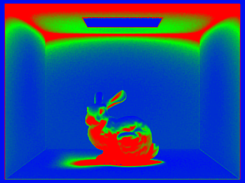 |
|
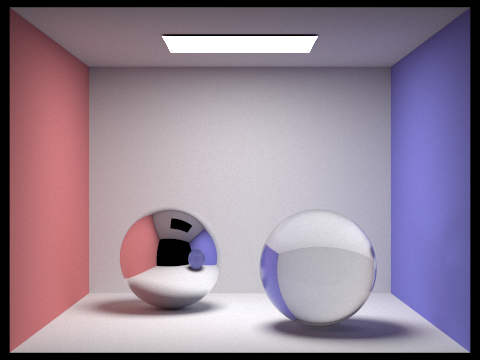 |
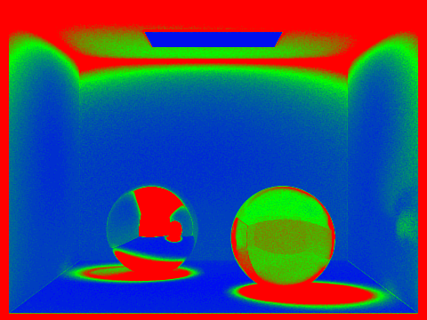 |